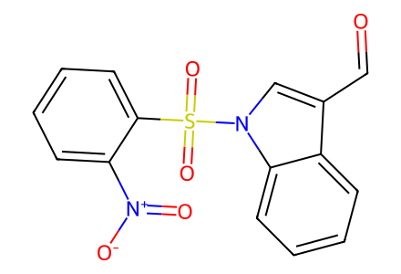
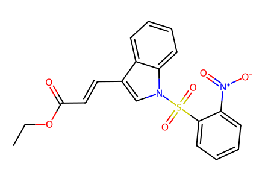
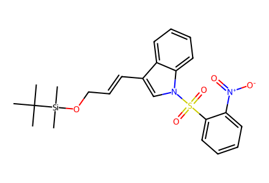
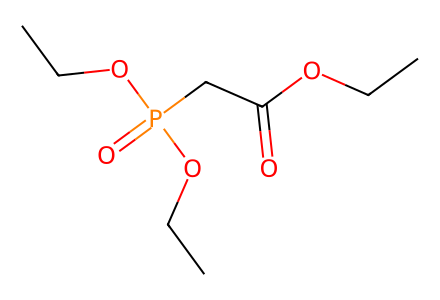
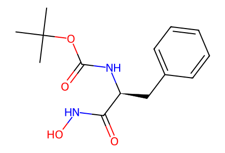
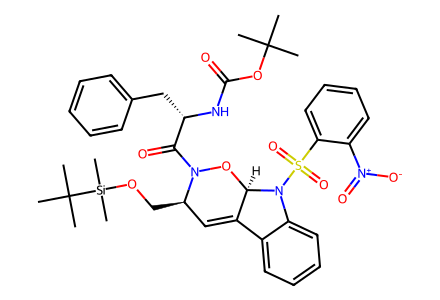
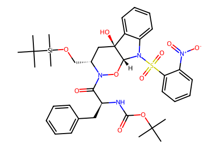
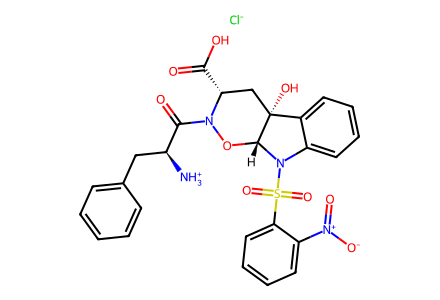
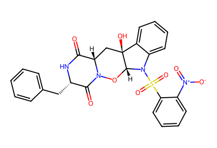
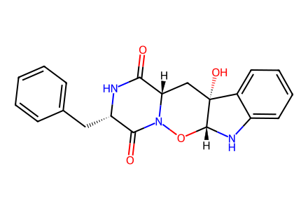

O=Cc1cn(S(=O)(=O)c2ccccc2[N+](=O)[O-])c2ccccc12All actual forward transformations of main Schemes 2-3, beginning with known 17 and 19. Proposed biosynthesis and prior literature route excluded. Ns conventionally expanded as 2-nitrobenzenesulfonyl; SI confirmation remains pending. Facts compiled deterministically; independent review pending.
完整 JSON · 逐步 CSV · 路线序列 · SDF · HRMS 核对
| 事件 | 分子连接 | 报告产率 | Canonical reaction SMILES |
|---|---|---|---|
| E01 | 17 + phosphonoacetate → 18 | 18: 88% | CCOC(=O)CP(=O)(OCC)OCC.O=Cc1cn(S(=O)(=O)c2ccccc2[N+](=O)[O-])c2ccccc12>>CCOC(=O)/C=C/c1cn(S(=O)(=O)c2ccccc2[N+](=O)[O-])c2ccccc12 |
| E02 | 18 → 13 | 13: 94% | CCOC(=O)/C=C/c1cn(S(=O)(=O)c2ccccc2[N+](=O)[O-])c2ccccc12>>CC(C)(C)[Si](C)(C)OC/C=C/c1cn(S(=O)(=O)c2ccccc2[N+](=O)[O-])c2ccccc12 |
| E03 | 13 + 19 → 15 | 15: 94% | CC(C)(C)OC(=O)N[C@@H](Cc1ccccc1)C(=O)NO.CC(C)(C)[Si](C)(C)OC/C=C/c1cn(S(=O)(=O)c2ccccc2[N+](=O)[O-])c2ccccc12>>CC(C)(C)OC(=O)N[C@@H](Cc1ccccc1)C(=O)N1O[C@@H]2C(=C[C@H]1CO[Si](C)(C)C(C)(C)C)c1ccccc1N2S(=O)(=O)c1ccccc1[N+](=O)[O-] |
| E04 | 15 → 16 | 16: 80% | CC(C)(C)OC(=O)N[C@@H](Cc1ccccc1)C(=O)N1O[C@@H]2C(=C[C@H]1CO[Si](C)(C)C(C)(C)C)c1ccccc1N2S(=O)(=O)c1ccccc1[N+](=O)[O-]>>CC(C)(C)OC(=O)N[C@@H](Cc1ccccc1)C(=O)N1O[C@H]2N(S(=O)(=O)c3ccccc3[N+](=O)[O-])c3ccccc3[C@@]2(O)C[C@H]1CO[Si](C)(C)C(C)(C)C |
| E05 | 16 → 20 | 20: 75% | CC(C)(C)OC(=O)N[C@@H](Cc1ccccc1)C(=O)N1O[C@H]2N(S(=O)(=O)c3ccccc3[N+](=O)[O-])c3ccccc3[C@@]2(O)C[C@H]1CO[Si](C)(C)C(C)(C)C>>[Cl-].[NH3+][C@@H](Cc1ccccc1)C(=O)N1O[C@H]2N(S(=O)(=O)c3ccccc3[N+](=O)[O-])c3ccccc3[C@]2(O)C[C@H]1C(=O)O |
| E06 | 20 → 21 | 21: 59% | [Cl-].[NH3+][C@@H](Cc1ccccc1)C(=O)N1O[C@H]2N(S(=O)(=O)c3ccccc3[N+](=O)[O-])c3ccccc3[C@]2(O)C[C@H]1C(=O)O>>O=C1N[C@@H](Cc2ccccc2)C(=O)N2O[C@H]3N(S(=O)(=O)c4ccccc4[N+](=O)[O-])c4ccccc4[C@@]3(O)C[C@@H]12 |
| E07 | 21 → 1 | 1: 75% | O=C1N[C@@H](Cc2ccccc2)C(=O)N2O[C@H]3N(S(=O)(=O)c4ccccc4[N+](=O)[O-])c4ccccc4[C@@]3(O)C[C@@H]12>>O=C1N[C@@H](Cc2ccccc2)C(=O)N2O[C@H]3Nc4ccccc4[C@]3(O)C[C@@H]12 |

O=Cc1cn(S(=O)(=O)c2ccccc2[N+](=O)[O-])c2ccccc12
CCOC(=O)/C=C/c1cn(S(=O)(=O)c2ccccc2[N+](=O)[O-])c2ccccc12
CC(C)(C)[Si](C)(C)OC/C=C/c1cn(S(=O)(=O)c2ccccc2[N+](=O)[O-])c2ccccc12
CCOC(=O)CP(=O)(OCC)OCC
CC(C)(C)OC(=O)N[C@@H](Cc1ccccc1)C(=O)NO
CC(C)(C)OC(=O)N[C@@H](Cc1ccccc1)C(=O)N1O[C@@H]2C(=C[C@H]1CO[Si](C)(C)C(C)(C)C)c1ccccc1N2S(=O)(=O)c1ccccc1[N+](=O)[O-]
CC(C)(C)OC(=O)N[C@@H](Cc1ccccc1)C(=O)N1O[C@H]2N(S(=O)(=O)c3ccccc3[N+](=O)[O-])c3ccccc3[C@@]2(O)C[C@H]1CO[Si](C)(C)C(C)(C)C
[Cl-].[NH3+][C@@H](Cc1ccccc1)C(=O)N1O[C@H]2N(S(=O)(=O)c3ccccc3[N+](=O)[O-])c3ccccc3[C@]2(O)C[C@H]1C(=O)O
O=C1N[C@@H](Cc2ccccc2)C(=O)N2O[C@H]3N(S(=O)(=O)c4ccccc4[N+](=O)[O-])c4ccccc4[C@@]3(O)C[C@@H]12
O=C1N[C@@H](Cc2ccccc2)C(=O)N2O[C@H]3Nc4ccccc4[C@]3(O)C[C@@H]12